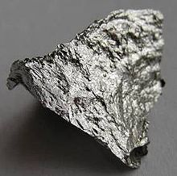

Manganese
|  | |||||||||||||||||||||||||||||||||||||||||||||||||||||||||||||||||||||||||||||||||||||||||||||||||||||||||||||||||||||||||||||||||||||||||||||||||||||||||||||||||||||||||||||||||||||||||||||||||||||||||||||||||||||||||||||||||||||
| General properties | |||||||||||||||||||||||||||||||||||||||||||||||||||||||||||||||||||||||||||||||||||||||||||||||||||||||||||||||||||||||||||||||||||||||||||||||||||||||||||||||||||||||||||||||||||||||||||||||||||||||||||||||||||||||||||||||||||||
|---|---|---|---|---|---|---|---|---|---|---|---|---|---|---|---|---|---|---|---|---|---|---|---|---|---|---|---|---|---|---|---|---|---|---|---|---|---|---|---|---|---|---|---|---|---|---|---|---|---|---|---|---|---|---|---|---|---|---|---|---|---|---|---|---|---|---|---|---|---|---|---|---|---|---|---|---|---|---|---|---|---|---|---|---|---|---|---|---|---|---|---|---|---|---|---|---|---|---|---|---|---|---|---|---|---|---|---|---|---|---|---|---|---|---|---|---|---|---|---|---|---|---|---|---|---|---|---|---|---|---|---|---|---|---|---|---|---|---|---|---|---|---|---|---|---|---|---|---|---|---|---|---|---|---|---|---|---|---|---|---|---|---|---|---|---|---|---|---|---|---|---|---|---|---|---|---|---|---|---|---|---|---|---|---|---|---|---|---|---|---|---|---|---|---|---|---|---|---|---|---|---|---|---|---|---|---|---|---|---|---|---|---|---|---|---|---|---|---|---|---|---|---|---|---|---|---|---|---|---|
| Name, symbol | manganese, Mn | ||||||||||||||||||||||||||||||||||||||||||||||||||||||||||||||||||||||||||||||||||||||||||||||||||||||||||||||||||||||||||||||||||||||||||||||||||||||||||||||||||||||||||||||||||||||||||||||||||||||||||||||||||||||||||||||||||||
| Pronunciation | /ˈmæŋɡəniːz/ MANG-gə-neez |
||||||||||||||||||||||||||||||||||||||||||||||||||||||||||||||||||||||||||||||||||||||||||||||||||||||||||||||||||||||||||||||||||||||||||||||||||||||||||||||||||||||||||||||||||||||||||||||||||||||||||||||||||||||||||||||||||||
| Appearance | silvery metallic | ||||||||||||||||||||||||||||||||||||||||||||||||||||||||||||||||||||||||||||||||||||||||||||||||||||||||||||||||||||||||||||||||||||||||||||||||||||||||||||||||||||||||||||||||||||||||||||||||||||||||||||||||||||||||||||||||||||
| Manganese in the periodic table | |||||||||||||||||||||||||||||||||||||||||||||||||||||||||||||||||||||||||||||||||||||||||||||||||||||||||||||||||||||||||||||||||||||||||||||||||||||||||||||||||||||||||||||||||||||||||||||||||||||||||||||||||||||||||||||||||||||
|
|||||||||||||||||||||||||||||||||||||||||||||||||||||||||||||||||||||||||||||||||||||||||||||||||||||||||||||||||||||||||||||||||||||||||||||||||||||||||||||||||||||||||||||||||||||||||||||||||||||||||||||||||||||||||||||||||||||
| Atomic number | 25 | ||||||||||||||||||||||||||||||||||||||||||||||||||||||||||||||||||||||||||||||||||||||||||||||||||||||||||||||||||||||||||||||||||||||||||||||||||||||||||||||||||||||||||||||||||||||||||||||||||||||||||||||||||||||||||||||||||||
| Standard atomic weight (±) | 54.938044(3)[1] | ||||||||||||||||||||||||||||||||||||||||||||||||||||||||||||||||||||||||||||||||||||||||||||||||||||||||||||||||||||||||||||||||||||||||||||||||||||||||||||||||||||||||||||||||||||||||||||||||||||||||||||||||||||||||||||||||||||
| Element category | transition metal | ||||||||||||||||||||||||||||||||||||||||||||||||||||||||||||||||||||||||||||||||||||||||||||||||||||||||||||||||||||||||||||||||||||||||||||||||||||||||||||||||||||||||||||||||||||||||||||||||||||||||||||||||||||||||||||||||||||
| Group, block | group 7, d-block | ||||||||||||||||||||||||||||||||||||||||||||||||||||||||||||||||||||||||||||||||||||||||||||||||||||||||||||||||||||||||||||||||||||||||||||||||||||||||||||||||||||||||||||||||||||||||||||||||||||||||||||||||||||||||||||||||||||
| Period | period 4 | ||||||||||||||||||||||||||||||||||||||||||||||||||||||||||||||||||||||||||||||||||||||||||||||||||||||||||||||||||||||||||||||||||||||||||||||||||||||||||||||||||||||||||||||||||||||||||||||||||||||||||||||||||||||||||||||||||||
| Electron configuration | [Ar] 3d5 4s2 | ||||||||||||||||||||||||||||||||||||||||||||||||||||||||||||||||||||||||||||||||||||||||||||||||||||||||||||||||||||||||||||||||||||||||||||||||||||||||||||||||||||||||||||||||||||||||||||||||||||||||||||||||||||||||||||||||||||
| per shell | 2, 8, 13, 2 | ||||||||||||||||||||||||||||||||||||||||||||||||||||||||||||||||||||||||||||||||||||||||||||||||||||||||||||||||||||||||||||||||||||||||||||||||||||||||||||||||||||||||||||||||||||||||||||||||||||||||||||||||||||||||||||||||||||
| Physical properties | |||||||||||||||||||||||||||||||||||||||||||||||||||||||||||||||||||||||||||||||||||||||||||||||||||||||||||||||||||||||||||||||||||||||||||||||||||||||||||||||||||||||||||||||||||||||||||||||||||||||||||||||||||||||||||||||||||||
| Phase | solid | ||||||||||||||||||||||||||||||||||||||||||||||||||||||||||||||||||||||||||||||||||||||||||||||||||||||||||||||||||||||||||||||||||||||||||||||||||||||||||||||||||||||||||||||||||||||||||||||||||||||||||||||||||||||||||||||||||||
| Melting point | 1519 K (1246 °C, 2275 °F) | ||||||||||||||||||||||||||||||||||||||||||||||||||||||||||||||||||||||||||||||||||||||||||||||||||||||||||||||||||||||||||||||||||||||||||||||||||||||||||||||||||||||||||||||||||||||||||||||||||||||||||||||||||||||||||||||||||||
| Boiling point | 2334 K (2061 °C, 3742 °F) | ||||||||||||||||||||||||||||||||||||||||||||||||||||||||||||||||||||||||||||||||||||||||||||||||||||||||||||||||||||||||||||||||||||||||||||||||||||||||||||||||||||||||||||||||||||||||||||||||||||||||||||||||||||||||||||||||||||
| Density near r.t. | 7.21 g·cm−3 | ||||||||||||||||||||||||||||||||||||||||||||||||||||||||||||||||||||||||||||||||||||||||||||||||||||||||||||||||||||||||||||||||||||||||||||||||||||||||||||||||||||||||||||||||||||||||||||||||||||||||||||||||||||||||||||||||||||
| when liquid, at m.p. | 5.95 g·cm−3 | ||||||||||||||||||||||||||||||||||||||||||||||||||||||||||||||||||||||||||||||||||||||||||||||||||||||||||||||||||||||||||||||||||||||||||||||||||||||||||||||||||||||||||||||||||||||||||||||||||||||||||||||||||||||||||||||||||||
| Heat of fusion | 12.91 kJ·mol−1 | ||||||||||||||||||||||||||||||||||||||||||||||||||||||||||||||||||||||||||||||||||||||||||||||||||||||||||||||||||||||||||||||||||||||||||||||||||||||||||||||||||||||||||||||||||||||||||||||||||||||||||||||||||||||||||||||||||||
| Heat of vaporization | 221 kJ·mol−1 | ||||||||||||||||||||||||||||||||||||||||||||||||||||||||||||||||||||||||||||||||||||||||||||||||||||||||||||||||||||||||||||||||||||||||||||||||||||||||||||||||||||||||||||||||||||||||||||||||||||||||||||||||||||||||||||||||||||
| Molar heat capacity | 26.32 J·mol−1·K−1 | ||||||||||||||||||||||||||||||||||||||||||||||||||||||||||||||||||||||||||||||||||||||||||||||||||||||||||||||||||||||||||||||||||||||||||||||||||||||||||||||||||||||||||||||||||||||||||||||||||||||||||||||||||||||||||||||||||||
vapor pressure
|
|||||||||||||||||||||||||||||||||||||||||||||||||||||||||||||||||||||||||||||||||||||||||||||||||||||||||||||||||||||||||||||||||||||||||||||||||||||||||||||||||||||||||||||||||||||||||||||||||||||||||||||||||||||||||||||||||||||
| Atomic properties | |||||||||||||||||||||||||||||||||||||||||||||||||||||||||||||||||||||||||||||||||||||||||||||||||||||||||||||||||||||||||||||||||||||||||||||||||||||||||||||||||||||||||||||||||||||||||||||||||||||||||||||||||||||||||||||||||||||
| Oxidation states | 7, 6, 5, 4, 3, 2, 1, −1, −2, −3 acidic, basic or amphoteric; depending on the oxidation state | ||||||||||||||||||||||||||||||||||||||||||||||||||||||||||||||||||||||||||||||||||||||||||||||||||||||||||||||||||||||||||||||||||||||||||||||||||||||||||||||||||||||||||||||||||||||||||||||||||||||||||||||||||||||||||||||||||||
| Electronegativity | Pauling scale: 1.55 | ||||||||||||||||||||||||||||||||||||||||||||||||||||||||||||||||||||||||||||||||||||||||||||||||||||||||||||||||||||||||||||||||||||||||||||||||||||||||||||||||||||||||||||||||||||||||||||||||||||||||||||||||||||||||||||||||||||
| Ionization energies | 1st: 717.3 kJ·mol−1 2nd: 1509.0 kJ·mol−1 3rd: 3248 kJ·mol−1 (more) |
||||||||||||||||||||||||||||||||||||||||||||||||||||||||||||||||||||||||||||||||||||||||||||||||||||||||||||||||||||||||||||||||||||||||||||||||||||||||||||||||||||||||||||||||||||||||||||||||||||||||||||||||||||||||||||||||||||
| Atomic radius | empirical: 127 pm | ||||||||||||||||||||||||||||||||||||||||||||||||||||||||||||||||||||||||||||||||||||||||||||||||||||||||||||||||||||||||||||||||||||||||||||||||||||||||||||||||||||||||||||||||||||||||||||||||||||||||||||||||||||||||||||||||||||
| Covalent radius | Low spin: 139±5 pm High spin: 161±8 pm |
||||||||||||||||||||||||||||||||||||||||||||||||||||||||||||||||||||||||||||||||||||||||||||||||||||||||||||||||||||||||||||||||||||||||||||||||||||||||||||||||||||||||||||||||||||||||||||||||||||||||||||||||||||||||||||||||||||
| Miscellanea | |||||||||||||||||||||||||||||||||||||||||||||||||||||||||||||||||||||||||||||||||||||||||||||||||||||||||||||||||||||||||||||||||||||||||||||||||||||||||||||||||||||||||||||||||||||||||||||||||||||||||||||||||||||||||||||||||||||
| Crystal structure | body-centered cubic (bcc)
 |
||||||||||||||||||||||||||||||||||||||||||||||||||||||||||||||||||||||||||||||||||||||||||||||||||||||||||||||||||||||||||||||||||||||||||||||||||||||||||||||||||||||||||||||||||||||||||||||||||||||||||||||||||||||||||||||||||||
| Speed of sound thin rod | 5150 m·s−1 (at 20 °C) | ||||||||||||||||||||||||||||||||||||||||||||||||||||||||||||||||||||||||||||||||||||||||||||||||||||||||||||||||||||||||||||||||||||||||||||||||||||||||||||||||||||||||||||||||||||||||||||||||||||||||||||||||||||||||||||||||||||
| Thermal expansion | 21.7 µm·m−1·K−1 (at 25 °C) | ||||||||||||||||||||||||||||||||||||||||||||||||||||||||||||||||||||||||||||||||||||||||||||||||||||||||||||||||||||||||||||||||||||||||||||||||||||||||||||||||||||||||||||||||||||||||||||||||||||||||||||||||||||||||||||||||||||
| Thermal conductivity | 7.81 W·m−1·K−1 | ||||||||||||||||||||||||||||||||||||||||||||||||||||||||||||||||||||||||||||||||||||||||||||||||||||||||||||||||||||||||||||||||||||||||||||||||||||||||||||||||||||||||||||||||||||||||||||||||||||||||||||||||||||||||||||||||||||
| Electrical resistivity | 1.44 µΩ·m (at 20 °C) | ||||||||||||||||||||||||||||||||||||||||||||||||||||||||||||||||||||||||||||||||||||||||||||||||||||||||||||||||||||||||||||||||||||||||||||||||||||||||||||||||||||||||||||||||||||||||||||||||||||||||||||||||||||||||||||||||||||
| Magnetic ordering | paramagnetic | ||||||||||||||||||||||||||||||||||||||||||||||||||||||||||||||||||||||||||||||||||||||||||||||||||||||||||||||||||||||||||||||||||||||||||||||||||||||||||||||||||||||||||||||||||||||||||||||||||||||||||||||||||||||||||||||||||||
| Young's modulus | 198 GPa | ||||||||||||||||||||||||||||||||||||||||||||||||||||||||||||||||||||||||||||||||||||||||||||||||||||||||||||||||||||||||||||||||||||||||||||||||||||||||||||||||||||||||||||||||||||||||||||||||||||||||||||||||||||||||||||||||||||
| Bulk modulus | 120 GPa | ||||||||||||||||||||||||||||||||||||||||||||||||||||||||||||||||||||||||||||||||||||||||||||||||||||||||||||||||||||||||||||||||||||||||||||||||||||||||||||||||||||||||||||||||||||||||||||||||||||||||||||||||||||||||||||||||||||
| Mohs hardness | 6.0 | ||||||||||||||||||||||||||||||||||||||||||||||||||||||||||||||||||||||||||||||||||||||||||||||||||||||||||||||||||||||||||||||||||||||||||||||||||||||||||||||||||||||||||||||||||||||||||||||||||||||||||||||||||||||||||||||||||||
| Brinell hardness | 196 MPa | ||||||||||||||||||||||||||||||||||||||||||||||||||||||||||||||||||||||||||||||||||||||||||||||||||||||||||||||||||||||||||||||||||||||||||||||||||||||||||||||||||||||||||||||||||||||||||||||||||||||||||||||||||||||||||||||||||||
| CAS Registry Number | 7439-96-5 | ||||||||||||||||||||||||||||||||||||||||||||||||||||||||||||||||||||||||||||||||||||||||||||||||||||||||||||||||||||||||||||||||||||||||||||||||||||||||||||||||||||||||||||||||||||||||||||||||||||||||||||||||||||||||||||||||||||
| History | |||||||||||||||||||||||||||||||||||||||||||||||||||||||||||||||||||||||||||||||||||||||||||||||||||||||||||||||||||||||||||||||||||||||||||||||||||||||||||||||||||||||||||||||||||||||||||||||||||||||||||||||||||||||||||||||||||||
| Discovery | Torbern Olof Bergman (1770) | ||||||||||||||||||||||||||||||||||||||||||||||||||||||||||||||||||||||||||||||||||||||||||||||||||||||||||||||||||||||||||||||||||||||||||||||||||||||||||||||||||||||||||||||||||||||||||||||||||||||||||||||||||||||||||||||||||||
| First isolation | Johann Gottlieb Gahn (1774) | ||||||||||||||||||||||||||||||||||||||||||||||||||||||||||||||||||||||||||||||||||||||||||||||||||||||||||||||||||||||||||||||||||||||||||||||||||||||||||||||||||||||||||||||||||||||||||||||||||||||||||||||||||||||||||||||||||||
| Most stable isotopes | |||||||||||||||||||||||||||||||||||||||||||||||||||||||||||||||||||||||||||||||||||||||||||||||||||||||||||||||||||||||||||||||||||||||||||||||||||||||||||||||||||||||||||||||||||||||||||||||||||||||||||||||||||||||||||||||||||||
|
|||||||||||||||||||||||||||||||||||||||||||||||||||||||||||||||||||||||||||||||||||||||||||||||||||||||||||||||||||||||||||||||||||||||||||||||||||||||||||||||||||||||||||||||||||||||||||||||||||||||||||||||||||||||||||||||||||||
{kind=link}
Manganese is a chemical element with symbol Mn and atomic number 25. It is not found as a free element in nature; it is often found in combination with iron, and in many minerals. Manganese is a metal with important industrial metal alloy uses, particularly in stainless steels.
Historically, manganese is named for various black minerals (such as pyrolusite) from the same region of Magnesia in Greece which gave names to similar-sounding magnesium, Mg, and magnetite, an ore of the element iron, Fe. By the mid-18th century, Swedish chemist Carl Wilhelm Scheele had used pyrolusite to produce chlorine. Scheele and others were aware that pyrolusite (now known to be manganese dioxide) contained a new element, but they were unable to isolate it. Johan Gottlieb Gahn was the first to isolate an impure sample of manganese metal in 1774, by reducing the dioxide with carbon.
Manganese phosphating is used as a treatment for rust and corrosion prevention on steel. Depending on their oxidation state, manganese ions have various colors and are used industrially as pigments. The permanganates of alkali and alkaline earth metals are powerful oxidizers. Manganese dioxide is used as the cathode (electron acceptor) material in zinc-carbon and alkaline batteries.
In biology, manganese(II) ions function as cofactors for a large variety of enzymes with many functions.[2] Manganese enzymes are particularly essential in detoxification of superoxide free radicals in organisms that must deal with elemental oxygen. Manganese also functions in the oxygen-evolving complex of photosynthetic plants. The element is a required trace mineral for all known living organisms. In larger amounts, and apparently with far greater effectiveness through inhalation, it can cause a poisoning syndrome in mammals, with neurological damage which is sometimes irreversible.
Contents
[hide]Characteristics[edit]
Physical properties[edit]
{kind=link}
Manganese is a silvery-gray metal that resembles iron. It is hard and very brittle, difficult to fuse, but easy to oxidize.[3] Manganese metal and its common ions are paramagnetic.[4] Manganese tarnishes slowly in air and "rusts" like iron, in water containing dissolved oxygen.
Isotopes[edit]
Naturally occurring manganese is composed of one stable isotope, 55Mn. Eighteen radioisotopes have been characterized, with the most stable being 53Mn with a half-life of 3.7 million years, 54Mn with a half-life of 312.3 days, and 52Mn with a half-life of 5.591 days. All of the remaining radioactive isotopes have half-lives that are less than three hours and the majority of these have half-lives that are less than one minute. This element also has three meta states.[5] Manganese is part of the iron group of elements, which are thought to be synthesized in large stars shortly before the supernova explosion. 53Mn decays to 53Cr with a half-life of 3.7 million years. Because of its relatively short half-life, 53Mn occurs only in tiny amounts due to the action of cosmic rays on iron in rocks.[6] Manganese isotopic contents are typically combined with chromium isotopic contents and have found application in isotope geology and radiometric dating. Mn–Cr isotopic ratios reinforce the evidence from 26Al and 107Pd for the early history of the solar system. Variations in 53Cr/52Cr and Mn/Cr ratios from several meteorites indicate an initial 53Mn/55Mn ratio that suggests Mn–Cr isotopic composition must result from in situ decay of 53Mn in differentiated planetary bodies. Hence 53Mn provides additional evidence for nucleosynthetic processes immediately before coalescence of the solar system.[5] The isotopes of manganese range in atomic weight from 46 u (46Mn) to 65 u (65Mn). The primary decay mode before the most abundant stable isotope, 55Mn, is electron capture and the primary mode after is beta decay.[5]
Chemical properties[edit]
{kind=link}
The most common oxidation states of manganese are +2, +3, +4, +6, and +7, though all oxidation states from −3 to +7 have been observed. Mn2+ often competes with Mg2+ in biological systems. Manganese compounds where manganese is in oxidation state +7, which are restricted to the unstable oxide Mn2O7 and compounds of the intensely purple permanganate anion MnO4−, are powerful oxidizing agents.[3] Compounds with oxidation states +5 (blue) and +6 (green) are strong oxidizing agents and are vulnerable to disproportionation.
{kind=link}
The most stable oxidation state for manganese is +2, which has a pale pink color, and many manganese(II) compounds are known, such as manganese(II) sulfate (MnSO4) and manganese(II) chloride (MnCl2). This oxidation state is also seen in the mineral rhodochrosite (manganese(II) carbonate). The +2 oxidation of Mn results from removal of the two 4s electrons, leaving a "high spin" ion in which all five of the 3d orbitals contain a single electron. Absorption of visible light by this ion is accomplished only by a spin-forbidden transition in which one of the d electrons must pair with another, to give the atom a change in spin of two units. The unlikeliness of such a transition is seen in the uniformly pale and almost colorless nature of Mn(II) compounds relative to other oxidation states of manganese.[8]
| Oxidation states of manganese[9] | |
|---|---|
| 0 | Mn 2(CO) 10 |
| +1 | MnC 5H 4CH 3(CO) 3 |
| +2 | MnCl 2, MnCO 3, MnO |
| +3 | MnF 3, Mn(OAc) 3, Mn 2O 3 |
| +4 | MnO 2 |
| +5 | K 3MnO 4 |
| +6 | K 2MnO 4 |
| +7 | KMnO 4, Mn 2O 7 |
|
|
|
The +3 oxidation state is known in compounds like manganese(III) acetate, but these are quite powerful oxidizing agents and also prone to disproportionation in solution to manganese(II) and manganese(IV). Solid compounds of manganese(III) are characterized by their preference for distorted octahedral coordination due to the Jahn-Teller effect and its strong purple-red color. The oxidation state 5+ can be obtained if manganese dioxide is dissolved in molten sodium nitrite.[10] Manganate (VI) salts can also be produced by dissolving Mn compounds, such as manganese dioxide, in molten alkali while exposed to air. Permanganate (+7 oxidation state) compounds are purple, and can give glass a violet color. Potassium permanganate, sodium permanganate and barium permanganate are all potent oxidizers. Potassium permanganate, also called Condy's crystals, is a commonly used laboratory reagent because of its oxidizing properties and finds use as a topical medicine (for example, in the treatment of fish diseases). Solutions of potassium permanganate were among the first stains and fixatives to be used in the preparation of biological cells and tissues for electron microscopy.[11]
History[edit]
The origin of the name manganese is complex. In ancient times, two black minerals from Magnesia in what is now modern Greece, were both called magnes from their place of origin, but were thought to differ in gender. The male magnes attracted iron, and was the iron ore we now know as lodestone or magnetite, and which probably gave us the term magnet. The female magnes ore did not attract iron, but was used to decolorize glass. This feminine magnes was later called magnesia, known now in modern times as pyrolusite or manganese dioxide. Neither this mineral nor manganese itself is magnetic. In the 16th century, manganese dioxide was called manganesum (note the two n's instead of one) by glassmakers, possibly as a corruption and concatenation of two words, since alchemists and glassmakers eventually had to differentiate a magnesia negra (the black ore) from magnesia alba (a white ore, also from Magnesia, also useful in glassmaking). Michele Mercati called magnesia negra manganesa, and finally the metal isolated from it became known as manganese (German: Mangan). The name magnesia eventually was then used to refer only to the white magnesia alba (magnesium oxide), which provided the name magnesium for that free element, when it was eventually isolated, much later.[12]
{kind=link}
Several oxides of manganese, for example manganese dioxide, are abundant in nature, and owing to their color, these oxides have been used as pigments since the Stone Age. The cave paintings in Gargas contain manganese as pigments and these cave paintings are 30,000 to 24,000 years old.[14]
Manganese compounds were used by Egyptian and Roman glassmakers, to either remove color from glass or add color to it.[15] The use as "glassmakers soap" continued through the Middle Ages until modern times and is evident in 14th-century glass from Venice.[16]
{kind=link}
Because of the use in glassmaking, manganese dioxide was available to alchemists, the first chemists, and was used for experiments. Ignatius Gottfried Kaim (1770) and Johann Glauber (17th century) discovered that manganese dioxide could be converted to permanganate, a useful laboratory reagent.[17] By the mid-18th century, the Swedish chemist Carl Wilhelm Scheele used manganese dioxide to produce chlorine. First, hydrochloric acid, or a mixture of dilute sulfuric acid and sodium chloride was made to react with manganese dioxide, later hydrochloric acid from the Leblanc process was used and the manganese dioxide was recycled by the Weldon process. The production of chlorine and hypochlorite containing bleaching agents was a large consumer of manganese ores.
Scheele and other chemists were aware that manganese dioxide contained a new element, but they were not able to isolate it. Johan Gottlieb Gahn was the first to isolate an impure sample of manganese metal in 1774, by reducing the dioxide with carbon.
The manganese content of some iron ores used in Greece led to the speculations that the steel produced from that ore contains inadvertent amounts of manganese, making the Spartan steel exceptionally hard.[18] Around the beginning of the 19th century, manganese was used in steelmaking and several patents were granted. In 1816, it was noted that adding manganese to iron made it harder, without making it any more brittle. In 1837, British academic James Couper noted an association between heavy exposures to manganese in mines with a form of Parkinson's disease.[19] In 1912, manganese phosphating electrochemical conversion coatings for protecting firearms against rust and corrosion were patented in the United States, and have seen widespread use ever since.[20]
The invention of the Leclanché cell in 1866 and the subsequent improvement of the batteries containing manganese dioxide as cathodic depolarizer increased the demand of manganese dioxide. Until the introduction of the nickel-cadmium battery and lithium-containing batteries, most batteries contained manganese. The zinc-carbon battery and the alkaline battery normally use industrially produced manganese dioxide, because natural occurring manganese dioxide contains impurities. In the 20th century, manganese dioxide has seen wide commercial use as the chief cathodic material for commercial disposable dry cells and dry batteries of both the standard (zinc-carbon) and alkaline types.[21]
Occurrence and production[edit]
Manganese makes up about 1000 ppm (0.1%) of the Earth's crust, making it the 12th most abundant element there.[22] Soil contains 7–9000 ppm of manganese with an average of 440 ppm.[22] Seawater has only 10 ppm manganese and the atmosphere contains 0.01 µg/m3.[22] Manganese occurs principally as pyrolusite (MnO2), braunite, (Mn2+Mn3+6)(SiO12),[23] psilomelane (Ba,H2O)2Mn5O10, and to a lesser extent as rhodochrosite (MnCO3).
| Manganese ore | Psilomelane (manganese ore) | Spiegeleisen is an iron alloy with a manganese content of approximately 15% | Manganese oxide dendrites on limestone from Solnhofen, Germany – a kind of pseudofossil. Scale is in mm | Mineral rhodochrosite (manganese(II) carbonate) |
{kind=link}
{kind=link}
{kind=link}
{kind=link}
{kind=link}
{kind=link}
The most important manganese ore is pyrolusite (MnO2). Other economically important manganese ores usually show a close spatial relation to the iron ores.[3] Land-based resources are large but irregularly distributed. About 80% of the known world manganese resources are found in South Africa; other important manganese deposits are in Ukraine, Australia, India, China, Gabon and Brazil.[24] In 1978, 500 billion tons of manganese nodules were estimated to exist on the ocean floor.[25] Attempts to find economically viable methods of harvesting manganese nodules were abandoned in the 1970s.[26]
In South Africa most identified deposits are located near Hotazel in the Northern Cape Province with an estimated 15 billion tons in 2011. In 2011 South Africa was the world's largest producer of manganese producing 3.4 million tons.[27]
Manganese is mined in South Africa, Australia, China, Brazil, Gabon, Ukraine, India and Ghana and Kazakhstan. US Import Sources (1998–2001): Manganese ore: Gabon, 70%; South Africa, 10%; Australia, 9%; Mexico, 5%; and other, 6%. Ferromanganese: South Africa, 47%; France, 22%; Mexico, 8%; Australia, 8%; and other, 15%. Manganese contained in all manganese imports: South Africa, 31%; Gabon, 21%; Australia, 13%; Mexico, 8%; and other, 27%.[24][28]
For the production of ferromanganese, the manganese ore is mixed with iron ore and carbon, and then reduced either in a blast furnace or in an electric arc furnace.[29] The resulting ferromanganese has a manganese content of 30 to 80%.[3] Pure manganese used for the production of iron-free alloys is produced by leaching manganese ore with sulfuric acid and a subsequent electrowinning process.[30]
{kind=link}
A more progressive extraction process involves directly reducing manganese ore in a heap leach. This is done by percolating natural gas through the bottom of the heap; the natural gas provides the heat (needs to be at least 850 °C) and the reducing agent (carbon monoxide). This reduces all of the manganese ore to manganese oxide (MnO), which is a leachable form. The ore then travels through a grinding circuit to reduce the particle size of the ore to between 150–250 μm, this increases the surface area to aid in the leaching process. The ore is then added to a leach tank, which contains sulfuric acid and ferrous iron (Fe2+) in a 1.6:1 ratio. The iron reacts with the manganese dioxide to form iron hydroxide and elemental manganese. This process yields approximately 92% recovery of the manganese. For further purification, the manganese can then be sent to an electrowinning facility.[31]
In 1972 the CIA's Project Azorian, through billionaire Howard Hughes, commissioned the ship Hughes Glomar Explorer with the cover story of harvesting manganese nodules from the sea floor. That triggered a rush of activity to attempt to collect manganese nodules, which was not actually practical. The real mission of Hughes Glomar Explorer was to raise a sunken Soviet submarine, the K-129, with the goal of retrieving Soviet code books.[32]
Applications[edit]
Manganese has no satisfactory substitute in its major applications, which are related to metallurgical alloy use.[24] In minor applications, (e.g., manganese phosphating), zinc and sometimes vanadium are viable substitutes.
Steel[edit]
{kind=link}
Manganese is essential to iron and steel production by virtue of its sulfur-fixing, deoxidizing, and alloying properties. Steelmaking,[33] including its ironmaking component, has accounted for most manganese demand, presently in the range of 85% to 90% of the total demand.[30] Among a variety of other uses, manganese is a key component of low-cost stainless steel formulations.[28][34]
Small amounts of manganese improve the workability of steel at high temperatures, because it forms a high-melting sulfide and therefore prevents the formation of a liquid iron sulfide at the grain boundaries. If the manganese content reaches 4%, the embrittlement of the steel becomes a dominant feature. The embrittlement decreases at higher manganese concentrations and reaches an acceptable level at 8%. Steel containing 8 to 15% of manganese can have a high tensile strength of up to 863 MPa.[35][36] Steel with 12% manganese was used for British steel helmets. This steel composition was discovered in 1882 by Robert Hadfield and is still known as Hadfield steel.[37]
Aluminium alloys[edit]
The second large application for manganese is as an alloying agent for aluminium. Aluminium with a manganese content of roughly 1.5% has an increased resistance against corrosion due to the formation of grains absorbing impurities which would lead to galvanic corrosion.[38] The corrosion-resistant aluminium alloys 3004 and 3104 with a manganese content of 0.8 to 1.5% are the alloys used for most of the beverage cans.[39] Before year 2000, more than 1.6 million tonnes have been used of those alloys; with a content of 1% manganese, this amount would need 16,000 tonnes of manganese.[39]
Other uses[edit]
Methylcyclopentadienyl manganese tricarbonyl is used as an additive in unleaded gasoline to boost octane rating and reduce engine knocking. The manganese in this unusual organometallic compound is in the +1 oxidation state.[40]
Manganese(IV) oxide (manganese dioxide, MnO2) is used as a reagent in organic chemistry for the oxidation of benzylic alcohols (i.e. adjacent to an aromatic ring). Manganese dioxide has been used since antiquity to oxidatively neutralize the greenish tinge in glass caused by trace amounts of iron contamination.[16] MnO2 is also used in the manufacture of oxygen and chlorine, and in drying black paints. In some preparations, it is a brown pigment that can be used to make paint and is a constituent of natural umber.
Manganese(IV) oxide was used in the original type of dry cell battery as an electron acceptor from zinc, and is the blackish material found when opening carbon–zinc type flashlight cells. The manganese dioxide is reduced to the manganese oxide-hydroxide MnO(OH) during discharging, preventing the formation of hydrogen at the anode of the battery.[41]
- MnO2 + H2O + -
e → MnO(OH) + OH−
The same material also functions in newer alkaline batteries (usually battery cells), which use the same basic reaction, but a different electrolyte mixture. In 2002, more than 230,000 tons of manganese dioxide was used for this purpose.[21][41]
{kind=link}
The metal is occasionally used in coins; until 2000, the only United States coin to use manganese was the "wartime" nickel from 1942 to 1945.[42] An alloy of 75% copper and 25% nickel was traditionally used for the production of nickel coins. However, because of shortage of nickel metal during the war, it was substituted by more available silver and manganese, thus resulting in an alloy of 56% copper, 35% silver and 9% manganese. Since 2000, dollar coins, for example the Sacagawea dollar and the Presidential $1 coins, are made from a brass containing 7% of manganese with a pure copper core.[43] In both cases of nickel and dollar, the use of manganese in the coin was to duplicate the electromagnetic properties of a previous identically sized and valued coin, for vending purposes. In the case of the later U.S. dollar coins, the manganese alloy was an attempt to duplicate properties of the copper/nickel alloy used in the previous Susan B. Anthony dollar.
Manganese compounds have been used as pigments and for the coloring of ceramics and glass. The brown color of ceramic is sometimes based on manganese compounds.[44] In the glass industry, manganese compounds are used for two effects. Manganese(III) reacts with iron(II) to induce a strong green color in glass by forming less-colored iron(III) and slightly pink manganese(II), compensating for the residual color of the iron(III).[16] Larger amounts of manganese are used to produce pink colored glass.
Biological role[edit]
{kind=link}
Manganese is an important metal for human health, being absolutely necessary for development, metabolism, and the antioxidant system. Nevertheless, excessive exposure or intake may lead to a condition known as manganism, a neurodegenerative disorder that causes dopaminergic neuronal death and parkinsonian- like symptoms.[22][45] The classes of enzymes that have manganese cofactors are very broad, and include oxidoreductases, transferases, hydrolases, lyases, isomerases, ligases, lectins, and integrins. The reverse transcriptases of many retroviruses (though not lentiviruses such as HIV) contain manganese. The best-known manganese-containing polypeptides may be arginase, the diphtheria toxin, and Mn-containing superoxide dismutase (Mn-SOD).[46]
Mn-SOD is the type of SOD present in eukaryotic mitochondria,
and also in most bacteria (this fact is in keeping with the
bacterial-origin theory of mitochondria). The Mn-SOD enzyme is probably
one of the most ancient, for nearly all organisms living in the presence
of oxygen use it to deal with the toxic effects of superoxide (O−
2), formed from the 1-electron reduction of dioxygen. Exceptions include a few kinds of bacteria, such as Lactobacillus plantarum and related lactobacilli, which use a different nonenzymatic mechanism, involving manganese (Mn2+) ions complexed with polyphosphate directly for this task, indicating how this function possibly evolved in aerobic life.
The manganese dietary reference intake for a 44 y.o. human male is 2.3 mg per day from food, with 11 mg estimated as the tolerable upper limit for daily intake to avoid toxicity. Estimates for females and children are generally less.[47] The essential minimum intake is unknown since manganese deficiency is so rare. The human body contains about 12 mg of manganese, which is stored mainly in the bones. The remaining manganese in soft tissue is mostly concentrated in the liver and kidneys.[22] In the human brain, the manganese is bound to manganese metalloproteins, most notably glutamine synthetase in astrocytes.[48]
Manganese is also important in photosynthetic oxygen evolution in chloroplasts in plants. The oxygen-evolving complex (OEC) is a part of photosystem II contained in the thylakoid membranes of chloroplasts; it is responsible for the terminal photooxidation of water during the light reactions of photosynthesis, and has a metalloenzyme core containing four atoms of manganese.[49] For this reason, most broad-spectrum plant fertilizers contain manganese.
Precautions[edit]
Manganese compounds are less toxic than those of other widespread metals, such as nickel and copper.[50] However, exposure to manganese dusts and fumes should not exceed the ceiling value of 5 mg/m3 even for short periods because of its toxicity level.[51] Manganese poisoning has been linked to impaired motor skills and cognitive disorders.[52]
The permanganate exhibits a higher toxicity than the manganese(II) compounds. The fatal dose is about 10 g, and several fatal intoxications have occurred. The strong oxidative effect leads to necrosis of the mucous membrane. For example, the esophagus is affected if the permanganate is swallowed. Only a limited amount is absorbed by the intestines, but this small amount shows severe effects on the kidneys and on the liver.[53][54]
In 2005, a study suggested a possible link between manganese inhalation and central nervous system toxicity in rats.[55]
Manganese exposure in United States is regulated by Occupational Safety and Health Administration.[56]
Generally, exposure to ambient Mn air concentrations in excess of 5 μg Mn/m3 can lead to Mn-induced symptoms. Increased ferroportin protein expression in human embryonic kidney (HEK293) cells is associated with decreased intracellular Mn concentration and attenuated cytotoxicity, characterized by the reversal of Mn-reduced glutamate uptake and diminished lactate dehydrogenase leakage.[57]
Environmental health concerns[edit]
Manganese in drinking water[edit]
Waterborne manganese has a greater bioavailability than dietary manganese. According to results from a 2010 study,[58] higher levels of exposure to manganese in drinking water are associated with increased intellectual impairment and reduced intelligence quotients in school-age children. It is hypothesized that long-term exposure to the naturally occurring manganese in shower water puts up to 8.7 million Americans at risk.[55][59][60] However, data indicates that the human body can recover from certain adverse effects of overexposure to manganese if the exposure is stopped and the body can clear the excess.[61]
Manganese in gasoline[edit]
Methylcyclopentadienyl manganese tricarbonyl (MMT) is a gasoline additive used to replace lead compounds for unleaded gasolines, to improve the octane number in low octane number petrol distillates. It functions as an antiknock agent by the action of the carbonyl groups. Fuels containing manganese tend to form manganese carbides, which damage exhaust valves. The need to use lead or manganese compounds is merely historic, as the availability of reformation processes which create high-octane rating fuels increased. The use of such fuels directly or in mixture with non-reformed distillates is universal in developed countries (EU, Japan, etc.). In USA the imperative to provide the lowest possible price per volume on motor fuels (low fuel taxation rate) and lax legislation of fuel content (before 2000) caused refineries to use MMT. Compared to 1953, levels of manganese in air have dropped.[62] Many racing competitions specifically ban manganese compounds in racing fuel (cart, minibike). MMT contains 24.4–25.2% manganese. There is strong correlation between elevated atmospheric manganese concentrations and automobile traffic density.
Role in neurological disorders[edit]
Manganism[edit]
Manganese overexposure is most frequently associated with manganism, a rare neurological disorder associated with excessive manganese ingestion or inhalation. Historically, persons employed in the production or processing of manganese alloys[63][64] have been at risk for developing manganism; however, current health and safety regulations protect workers in developed nations.[56] The disorder was first described in 1837 by British academic John Couper, who studied two patients who were manganese grinders.[19]
Manganism is a biphasic disorder. In its early stages, an intoxicated person may experience depression, mood swings, compulsive behaviors, and psychosis. Early neurological symptoms give way to late-stage manganism, which resembles Parkinson's disease. Symptoms include weakness, monotone and slowed speech, an expressionless face, tremor, forward-leaning gait, inability to walk backwards without falling, rigidity, and general problems with dexterity, gait and balance.[19][65] Unlike Parkinson's disease, manganism is not associated with loss of smell and patients are typically unresponsive to treatment with L-DOPA.[66] Symptoms of late-stage manganism become more severe over time even if the source of exposure is removed and brain manganese levels return to normal.[65]
Childhood developmental disorders[edit]
Several recent studies attempt to examine the effects of chronic low-dose manganese overexposure on development in children. The earliest study of this kind was conducted in the Chinese province of Shanxi. Drinking water there had been contaminated through improper sewage irrigation and contained 240–350 µg Mn/L. Although WMn concentrations at or below 300 µg Mn/L were considered safe at the time of the study by the US EPA and 400 µg Mn/L by the World Health Organization, the 92 children sampled (between 11 and 13 years of age) from this province displayed lower performance on tests of manual dexterity and rapidity, short-term memory, and visual identification when compared to children from an uncontaminated area. More recently, a study of 10-year-old children in Bangladesh showed a relationship between WMn concentration in well water and diminished IQ scores. A third study conducted in Quebec examined school children between the ages of 6 and 15 living in homes that received water from a well containing 610 µg Mn/L; controls lived in homes that received water from a 160 µg Mn/L well. Children in the experimental group showed increased hyperactive and oppositional behaviors.[58]
The EPA currently states less than 50 µg Mn/L are considered safe.[67]
Neurodegenerative diseases[edit]
A protein called DMT1 is the major transporter involved in manganese absorption from the intestine, and may be the major transporter of manganese across the blood–brain barrier. DMT1 also transports inhaled manganese across the nasal epithelium. The putative mechanism of action is that manganese overexposure and/or dysregulation lead to oxidative stress, mitochondrial dysfunction, glutamate-mediated excitoxicity, and aggregation of proteins.
See also[edit]
References[edit]
- Jump up ^ Standard Atomic Weights 2013. Commission on Isotopic Abundances and Atomic Weights
- Jump up ^ Roth, Jerome; Ponzoni, Silvia; Aschner, Michael (2013). "Chapter 6 Manganese Homeostasis and Transport". In Banci, Lucia. Metallomics and the Cell. Metal Ions in Life Sciences 12. Springer. doi:10.1007/978-94-007-5561-1_6. ISBN 978-94-007-5560-4. electronic-book ISBN 978-94-007-5561-1 ISSN 1559-0836 electronic-ISSN 1868-0402
- ^ Jump up to: a b c d Holleman, Arnold F.; Wiberg, Egon; Wiberg, Nils (1985). "Mangan". Lehrbuch der Anorganischen Chemie (in German) (91–100 ed.). Walter de Gruyter. pp. 1110–1117. ISBN 3-11-007511-3.
- Jump up ^ Lide, David R. (2004). Magnetic susceptibility of the elements and inorganic compounds, in Handbook of Chemistry and Physics (PDF). CRC press. ISBN 0-8493-0485-7.
- ^ Jump up to: a b c Audi, Georges; Bersillon, O.; Blachot, J.; Wapstra, A.H. (2003). "The NUBASE Evaluation of Nuclear and Decay Properties". Nuclear Physics A (Atomic Mass Data Center) 729: 3–128. Bibcode:2003NuPhA.729....3A. doi:10.1016/j.nuclphysa.2003.11.001.
- Jump up ^ Schaefer, Jeorg; Faestermann, Thomas; Herzog, Gregory F.; Knie, Klaus; Korschinek, Gunther; Masarik, Jozef; Meier, Astrid; Poutivtsev, Michail; Rugel, Georg; Schlüchter, Christian; Serifiddin, Feride; Winckler, Gisela (2006). "Terrestrial manganese-53 – A new monitor of Earth surface processes". Earth and Planetary Science Letters 251 (3–4): 334–345. Bibcode:2006E&PSL.251..334S. doi:10.1016/j.epsl.2006.09.016.
- Jump up ^ "Ch. 20". Shriver and Atkins' Inorganic Chemistry. Oxford University Press. 2010. ISBN 978-0-19-923617-6.
- Jump up ^ Rayner-Canham, Geoffrey and Overton, Tina (2003) Descriptive Inorganic Chemistry, Macmillan, p. 491, ISBN 0-7167-4620-4.
- Jump up ^ Schmidt, Max (1968). "VII. Nebengruppe". Anorganische Chemie II. (in German). Wissenschaftsverlag. pp. 100–109.
- Jump up ^ Temple, R. B.; Thickett, G. W. (1972). "The formation of manganese(v) in molten sodium nitrite" (PDF). Australian Journal of Chemistry 25 (3): 55. doi:10.1071/CH9720655.
- Jump up ^ Luft, J. H. (1956). "Permanganate – a new fixative for electron microscopy". Journal of Biophysical and Biochemical Cytology 2 (6): 799–802. doi:10.1083/jcb.2.6.799. PMC 2224005. PMID 13398447.
- Jump up ^ Calvert, J.B. (2003-01-24). "Chromium and Manganese". Retrieved 2009-04-30.
- Jump up ^ Chalmin, Emilie; Menu, Michel; Vignaud, Colette (2003). "Analysis of rock art painting and technology of Palaeolithic painters". Measurement Science and Technology 14 (9): 1590–1597. doi:10.1088/0957-0233/14/9/310.
- Jump up ^ Chalmin, E; Vignaud, C.; Salomon, H.; Farges, F.; Susini, J.; Menu, M. (2006). "Minerals discovered in paleolithic black pigments by transmission electron microscopy and micro-X-ray absorption near-edge structure". Applied Physics A 83 (12): 213–218. Bibcode:2006ApPhA..83..213C. doi:10.1007/s00339-006-3510-7.
- Jump up ^ Sayre, E. V.; Smith, R. W. (1961). "Compositional Categories of Ancient Glass". Science 133 (3467): 1824–1826. Bibcode:1961Sci...133.1824S. doi:10.1126/science.133.3467.1824. PMID 17818999.
- ^ Jump up to: a b c Mccray, W. Patrick (1998). "Glassmaking in renaissance Italy: The innovation of venetian cristallo". Journal of the Minerals, Metals and Materials Society 50 (5): 14. Bibcode:1998JOM....50e..14M. doi:10.1007/s11837-998-0024-0.
- Jump up ^ Rancke-Madsen, E. (1975). "The Discovery of an Element". Centaurus 19 (4): 299–313. Bibcode:1975Cent...19..299R. doi:10.1111/j.1600-0498.1975.tb00329.x.
- Jump up ^ Alessio, L; Campagna, M; Lucchini, R (2007). "From lead to manganese through mercury: mythology, science, and lessons for prevention". American journal of industrial medicine 50 (11): 779–787. doi:10.1002/ajim.20524. PMID 17918211.
- ^ Jump up to: a b c Couper, John (1837). "On the effects of black oxide of manganese when inhaled into the lungs". Br. Ann. Med. Pharm. Vital. Stat. Gen. Sci. 1: 41–42.
- Jump up ^ Olsen, Sverre E.; Tangstad, Merete; Lindstad, Tor (2007). "History of manganese". Production of Manganese Ferroalloys. Tapir Academic Press. pp. 11–12. ISBN 978-82-519-2191-6.
- ^ Jump up to: a b Preisler, Eberhard (1980). "Moderne Verfahren der Großchemie: Braunstein". Chemie in unserer Zeit (in German) 14 (5): 137–148. doi:10.1002/ciuz.19800140502.
- ^ Jump up to: a b c d e Emsley, John (2001). "Manganese". Nature's Building Blocks: An A-Z Guide to the Elements. Oxford, UK: Oxford University Press. pp. 249–253. ISBN 0-19-850340-7.
- Jump up ^ Bhattacharyya, P. K.; Dasgupta, Somnath; Fukuoka, M.; Roy Supriya (1984). "Geochemistry of braunite and associated phases in metamorphosed non-calcareous manganese ores of India". Contributions to Mineralogy and Petrology 87 (1): 65–71. Bibcode:1984CoMP...87...65B. doi:10.1007/BF00371403.
- ^ Jump up to: a b c d Corathers, Lisa A. (2009). "Mineral Commodity Summaries 2009: Manganese" (PDF). United States Geological Survey. Retrieved 2009-04-30.
- Jump up ^ Wang, X; Schröder, HC; Wiens, M; Schlossmacher, U; Müller, WEG (2009). "Manganese/polymetallic nodules: micro-structural characterization of exolithobiontic- and endolithobiontic microbial biofilms by scanning electron microscopy". Micron 40 (3): 350–358. doi:10.1016/j.micron.2008.10.005. PMID 19027306.
- Jump up ^ United Nations Ocean Economics and Technology Office, Technology Branch, United Nations (1978). Manganese Nodules: Dimensions and Perspectives. Springer. ISBN 978-90-277-0500-6.
- Jump up ^ "Manganese Mining in South Africa – Overview". MBendi.com. Retrieved 2014-01-04.
- ^ Jump up to: a b Corathers, Lisa A. (June 2008). "2006 Minerals Yearbook: Manganese" (PDF). Washington, D.C.: United States Geological Survey. Retrieved 2009-04-30.
- Jump up ^ Corathers, L. A.; Machamer, J. F. (2006). "Manganese". Industrial Minerals & Rocks: Commodities, Markets, and Uses (7th ed.). SME. pp. 631–636. ISBN 978-0-87335-233-8.
- ^ Jump up to: a b Zhang, Wensheng; Cheng, Chu Yong (2007). "Manganese metallurgy review. Part I: Leaching of ores/secondary materials and recovery of electrolytic/chemical manganese dioxide". Hydrometallurgy 89 (3–4): 137–159. doi:10.1016/j.hydromet.2007.08.010.
- Jump up ^ Chow, Norman; Nacu, Anca; Warkentin, Doug; Aksenov, Igor & Teh, Hoe (2010). "The Recovery of Manganese from low grade resources: bench scale metallurgical test program completed" (PDF). Kemetco Research Inc.
- Jump up ^ "Project Azorian: The CIA's Declassified History of the Glomar Explorer". National Security Archive at George Washington University. 2010-02-12. Retrieved 2013-09-18.
- Jump up ^ Verhoeven, John D. (2007). Steel metallurgy for the non-metallurgist. Materials Park, Ohio: ASM International. pp. 56–57. ISBN 978-0-87170-858-8.
- Jump up ^ Dastur, Y. N.; Leslie, W. C. (1981). "Mechanism of work hardening in Hadfield manganese steel". Metallurgical Transactions A 12 (5): 749. Bibcode:1981MTA....12..749D. doi:10.1007/BF02648339.
- Jump up ^ Stansbie, John Henry (2007). Iron and Steel. Read Books. pp. 351–352. ISBN 978-1-4086-2616-0.
- Jump up ^ Brady, George S.; Clauser, Henry R.; Vaccari. John A. (2002). Materials handbook: an encyclopedia for managers, technical professionals, purchasing and production managers, technicians, and supervisors. New York, NY: McGraw-Hill. pp. 585–587. ISBN 978-0-07-136076-0.
- Jump up ^ Tweedale, Geoffrey (1985). "Sir Robert Abbott Hadfield F.R.S. (1858–1940), and the Discovery of Manganese Steel Geoffrey Tweedale". Notes and Records of the Royal Society of London 40 (1): 63–74. doi:10.1098/rsnr.1985.0004. JSTOR 531536.
- Jump up ^ "Chemical properties of 2024 aluminum allow". Metal Suppliers Online, LLC. Retrieved 2009-04-30.
- ^ Jump up to: a b Kaufman, John Gilbert (2000). "Applications for Aluminium Alloys and Tempers". Introduction to aluminum alloys and tempers. ASM International. pp. 93–94. ISBN 978-0-87170-689-8.
- Jump up ^ Leigh A. Graham; Alison R. Fout; Karl R. Kuehne; Jennifer L. White; Bhaskar Mookherji; Fred M. Marks; Glenn P. A. Yap; Lev N. Zakharov; Arnold L. Rheingold & Daniel Rabinovich (2005). "Manganese(I) poly(mercaptoimidazolyl)borate complexes: spectroscopic and structural characterization of MnH–B interactions in solution and in the solid state". Dalton Transactions (1): 171–180. doi:10.1039/b412280a. PMID 15605161.
- ^ Jump up to: a b Dell, R. M. (2000). "Batteries fifty years of materials development". Solid State Ionics 134: 139–158. doi:10.1016/S0167-2738(00)00722-0.
- Jump up ^ Kuwahara, Raymond T.; Skinner III, Robert B.; Skinner Jr., Robert B. (2001). "Nickel coinage in the United States". Western Journal of Medicine 175 (2): 112–114. doi:10.1136/ewjm.175.2.112. PMC 1071501. PMID 11483555.
- Jump up ^ "Design of the Sacagawea dollar". United States Mint. Retrieved 2009-05-04.
- Jump up ^ Shepard, Anna Osler (1956). "Manganese and Iron–Manganese Paints". Ceramics for the archaeologist. Carnegie Institution of Washington. pp. 40–42. ISBN 978-0-87279-620-1.
- Jump up ^ Silva Avila, Daiana; Luiz Puntel, Robson; Aschner, Michael (2013). "Chapter 7. Manganese in Health and Disease". In Astrid Sigel; Helmut Sigel; Roland K. O. Sigel. Interrelations between Essential Metal Ions and Human Diseases. Metal Ions in Life Sciences 13. Springer. pp. 199–227. doi:10.1007/978-94-007-7500-8_7.
- Jump up ^ Law, N.; Caudle, M; Pecoraro, V (1998). "Manganese Redox Enzymes and Model Systems: Properties, Structures, and Reactivity". Advances in Inorganic Chemistry 46. p. 305. doi:10.1016/S0898-8838(08)60152-X. ISBN 9780120236466.
- Jump up ^ Dietary Reference Intakes (DRIs): Recommended Intakes for Individuals (PDF), Food and Nutrition Board, Institute of Medicine, National Academies, 2004, retrieved 2009-06-09
- Jump up ^ Takeda, A. (2003). "Manganese action in brain function". Brain Research Reviews 41 (1): 79–87. doi:10.1016/S0165-0173(02)00234-5. PMID 12505649.
- Jump up ^ Dismukes, G. Charles; Willigen, Rogier T. van (2006). "Manganese: The Oxygen-Evolving Complex & Models". Manganese: The Oxygen-Evolving Complex & Models. Encyclopedia of Inorganic Chemistry. doi:10.1002/0470862106.ia128. ISBN 0470860782.
- Jump up ^ Hasan, Heather (2008). Manganese. The Rosen Publishing Group. p. 31. ISBN 978-1-4042-1408-8.
- Jump up ^ "Manganese Chemical Background". Metcalf Institute for Marine and Environmental Reporting University of Rhode Island. April 2006. Retrieved 2008-04-30.
- Jump up ^ "Risk Assessment Information System Toxicity Summary for Manganese". Oak Ridge National Laboratory. Retrieved 2008-04-23.
- Jump up ^ Ong, K. L.; Tan, TH; Cheung, WL (1997). "Potassium permanganate poisoning – a rare cause of fatal self poisoning". Emergency Medicine Journal 14 (1): 43–5. doi:10.1136/emj.14.1.43. PMC 1342846. PMID 9023625.
- Jump up ^ Young, R.; Critchley, JA; Young, KK; Freebairn, RC; Reynolds, AP; Lolin, YI (1996). "Fatal acute hepatorenal failure following potassium permanganate ingestion". Human & Experimental Toxicology 15 (3): 259–61. doi:10.1177/096032719601500313. PMID 8839216.
- ^ Jump up to: a b Elsner, Robert J. F.; Spangler, John G. (2005). "Neurotoxicity of inhaled manganese: Public health danger in the shower?". Medical Hypotheses 65 (3): 607–616. doi:10.1016/j.mehy.2005.01.043. PMID 15913899.
- ^ Jump up to: a b "Safety and Health Topics: Manganese Compounds (as Mn)".
- Jump up ^ Yin, Z; Jiang, H; Lee, ES; Ni, M; Erikson, KM; Milatovic, D; Bowman, AB; Aschner, M (2010). "Ferroportin is a manganese-responsive protein that decreases manganese cytotoxicity and accumulation" (PDF). Journal of Neurochemistry 112 (5): 1190–8. doi:10.1111/j.1471-4159.2009.06534.x. PMC 2819584. PMID 20002294.
- ^ Jump up to: a b Bouchard, Maryse F.; Sébastien Sauvé; Benoit Barbeau; Melissa Legrand; Marie-Ève Brodeur; Thérèse Bouffard; Elyse Limoges; David C. Bellinger & Donna Mergler (20 September 2010). "Intellectual Impairment in School-Age Children" (PDF). Environmental Health Perspectives 119 (1): 138–143. doi:10.1289/ehp.1002321. PMC 3018493. PMID 20855239. Retrieved 2010-12-11.
- Jump up ^ Finley, John Weldon; Davis, Cindy D. (1999). "Manganese deficiency and toxicity: Are high or low dietary amounts of manganese cause for concern?". BioFactors 10 (1): 15–24. doi:10.1002/biof.5520100102. PMID 10475586.
- Jump up ^ Barceloux, Donald; Barceloux, Donald (1999). "Manganese". Clinical Toxicology 37 (2): 293. doi:10.1081/CLT-100102427.
- Jump up ^ {{Devenyi, A.G., T.F. Barron, and A.C. Mamourian. 1994. Dystonia, hyperintense basal ganglia, and high whole blood manganese levels in Alagille's syndrome. Gastroenterol. 106(4):1068- 1071}}
- Jump up ^ Agency for Toxic Substances and Disease Registry (2012) 6. Potential for human exposure, in Toxicological Profile for Manganese, Atlanta, GA: U.S. Department of Health and Human Services.
- Jump up ^ Baselt, R. (2008) Disposition of Toxic Drugs and Chemicals in Man, 8th edition, Biomedical Publications, Foster City, CA, pp. 883–886, ISBN 0-9626523-7-7.
- Jump up ^ Normandin, Louise; Hazell, AS (2002). "Manganese neurotoxicity: an update of pathophysiologic mechanisms". Metabolic Brain Disease 17 (4): 375–87. doi:10.1023/A:1021970120965. PMID 12602514.
- ^ Jump up to: a b Cersosimo, M.G.; Koller, W.C. (2007). "The diagnosis of manganese-induced parkinsonism". NeuroToxicology 27 (3): 340–346. doi:10.1016/j.neuro.2005.10.006. PMID 16325915.
- Jump up ^ Lu, C.S.; Huang, C.C; Chu, N.S.; Calne, D.B. (1994). "Levodopa failure in chronic manganism". Neurology 44 (9): 1600–1602. doi:10.1212/WNL.44.9.1600. PMID 7936281.
- Jump up ^ "Drinking Water Contaminants". water.epa.gov. US EPA. Retrieved 2 February 2015.
External links[edit]
| Definitions from Wiktionary | |
| Media from Commons | |
| Textbooks from Wikibooks | |
| Learning resources from Wikiversity | |
- National Pollutant Inventory – Manganese and compounds Fact Sheet
- International Manganese Institute
- NIOSH Manganese Topic Page
- Manganese at The Periodic Table of Videos (University of Nottingham)
- Development of a Standardised Method for Measuring Manganese Exposure by A Sánchez Jiménez and others. Institute of Occupational Medicine Research Report TM/10/04. (This study compares the concentrations of inhalable and respirable Manganese collected with three airborne samples: the CIS (Conical Inhalable Sampler), IOM ( the Institute of Occupational Medicine) and the Higgins Dewell cyclone.)
| [hide] Periodic table (Large cells) | |||||||||||||||||||||||||||||||||
|---|---|---|---|---|---|---|---|---|---|---|---|---|---|---|---|---|---|---|---|---|---|---|---|---|---|---|---|---|---|---|---|---|---|
| 1 | 2 | 3 | 4 | 5 | 6 | 7 | 8 | 9 | 10 | 11 | 12 | 13 | 14 | 15 | 16 | 17 | 18 | ||||||||||||||||
| 1 | H | He | |||||||||||||||||||||||||||||||
| 2 | Li | Be | B | C | N | O | F | Ne | |||||||||||||||||||||||||
| 3 | Na | Mg | Al | Si | P | S | Cl | Ar | |||||||||||||||||||||||||
| 4 | K | Ca | Sc | Ti | V | Cr | Mn | Fe | Co | Ni | Cu | Zn | Ga | Ge | As | Se | Br | Kr | |||||||||||||||
| 5 | Rb | Sr | Y | Zr | Nb | Mo | Tc | Ru | Rh | Pd | Ag | Cd | In | Sn | Sb | Te | I | Xe | |||||||||||||||
| 6 | Cs | Ba | La | Ce | Pr | Nd | Pm | Sm | Eu | Gd | Tb | Dy | Ho | Er | Tm | Yb | Lu | Hf | Ta | W | Re | Os | Ir | Pt | Au | Hg | Tl | Pb | Bi | Po | At | Rn | |
| 7 | Fr | Ra | Ac | Th | Pa | U | Np | Pu | Am | Cm | Bk | Cf | Es | Fm | Md | No | Lr | Rf | Db | Sg | Bh | Hs | Mt | Ds | Rg | Cn | 113 | Fl | 115 | Lv | 117 | 118 | |
|
|
|||||||||||||||||||||||||||||||||
|
||
|
||